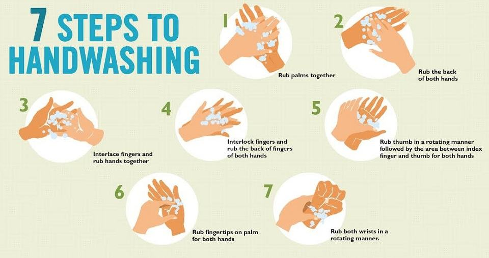

Berita Terbaru Kami

7 Langkah cara mencuci tangan yang benar menurut WHO
5 Juli 2020 / Berita / Admin
5 Juli 2020 / Berita / Admin
Pengertian cuci tangan 7 langkah adalah tata cara mencuci tangan menggunakan sabun untuk membersihkan jari – jari, telapak dan punggung tangan dari semua kotoran, kuman serta [...]
 Kirab Budaya SMK NU Kabat
Kirab Budaya SMK NU Kabat5 Juli 2020 / Berita / Admin
Pengertian cuci tangan 7 langkah adalah tata cara mencuci tangan menggunakan sabun untuk membersihkan jari – jari, telapak dan punggung tangan dari semua kotoran, kuman serta [...]
Sejarah SMK NU Kabat
5 Juli 2020 / Berita / Admin
Sekolah ini berdiri tanggal 13 Juni 2014. Terletak di pinggir jalan raya Banyuwangi, memungkinkan akses untuk mencapai sekolah ini sangat mudah baik bagi para siswa maupun [...]